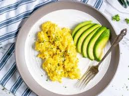

Eggs and avocados

Description
My go to breakfast, I make this almost every day, the classic and timeless eggs and avocados. You literally can never go
wrong with this. It is stress free, and life made easy for a light morning breakfast.
Ingredients
- 3 eggs
- 1 avocado
- Salt
- Black pepper
- Butter/oil
Steps
- Break in three eggs into a small bowl and add a pinch of salt and black pepper to your battered eggs.
- Spray your cooking oil of choice or butter in pan.
- Pour in your eggs and mix until its fried.
- Put your eggs in your plate and serve with sliced avocados.